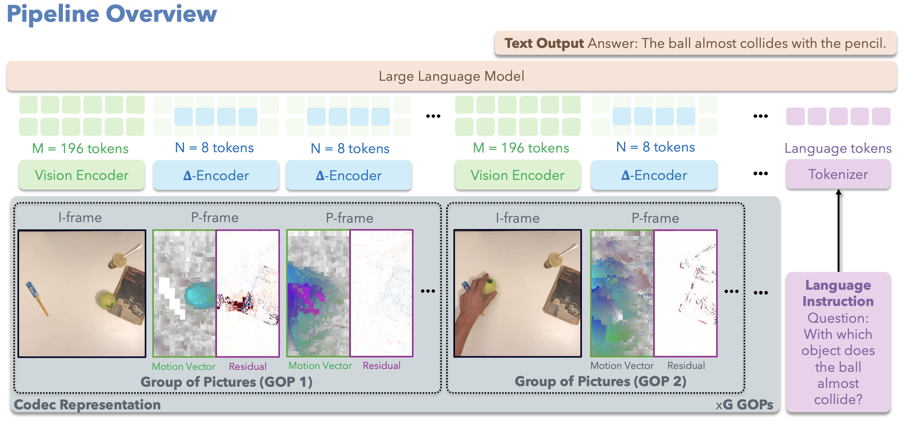

Codec Primitives For Efficient Video Language Models
Performance of LLaVA-Video (7B) at different number of keyframes per GOP, as well as in the default setup of selecting 64 keyframes regardless of video length compared to CoPE-VideoLM.
Comprehensive evaluation across multiple video benchmarks, covering four categories: (i) general video question answering, (ii) temporal reasoning and motion understanding, (iii) long-form and instruction-following tasks, and (iv) spatial scene understanding.
Primary comparison with LLaVA-Video-7B (base model) alongside several closely related open-source approaches,
all evaluations conducted using lmms-eval to ensure consistency.
User chat experience comparing LLaVA-Video and CoPE-VideoLM at 1 FPS video input.
TTFT and E2EL for generating 64 text tokens at several keyframe densities compared to the 64 keyframe baseline at 1 FPS.
Theoretical plot showing token efficiency across configurations - enable scaling to longer videos without exceeding context limits.

Given a video in its raw codec representation, our framework leverages the GOP structure for efficient, codec-aware tokenization. I-frames are processed by a standard frozen vision encoder (φRGB) to produce dense RGB tokens. P-frames, however, bypass full RGB decoding. Their raw components, motion vectors and residuals, are instead fed into our lightweight Δ-Encoder (φΔ) to generate a small set of highly compact Δ-tokens. The final token stream, an interleaved sequence of I-frame tokens and Δ-tokens, is consumed by the LLM, enabling dense temporal coverage at a fraction of the standard token count and runtime.
Δ-Encoder processes motion vectors and residuals through two lightweight branches designed to extract and compress codec-domain information. The resulting motion and residual tokens are concatenated to form the Δ-tokens used for P-frames, providing an efficient representation that is projected to the RGB token space during pre-training.
Training Paradigm. First, the Δ-Encoder is pre-trained to align its output with the frozen vision encoder. The resulting features are aligned with ground-truth image tokens via a patch-wise MSE loss, enforcing spatially consistent alignment across patches. After pre-training, the Δ-Encoder is integrated into the VideoLM for end-to-end fine-tuning — the reference-conditioned branches from pre-training are dropped, so no RGB reference frames are processed for P-frames. This yields a substantial compute and memory reduction while keeping the standard instruction tuning objective unchanged.
We would like to thank (in alphabetical order): Isar Meijer and Krzysztof Waraksa from Microsoft for help with training pipeline setup; Tao Sun and Jianhao Zheng from Stanford for feedback at different stages of the project.
Website template inspired by GuideFlow3D.
If you find our work useful, please consider citing:
@misc{cope_videolm, title={CoPE-VideoLM: Codec Primitives For Efficient Video Language Models}, author={Sayan Deb Sarkar and R\'emi Pautrat and Ondrej Miksik and Marc Pollefeys and Iro Armeni and Mahdi Rad and Mihai Dusmanu}, year={2026}, eprint={TODO}, archivePrefix={arXiv}, primaryClass={cs.CV}, url={TODO}, }